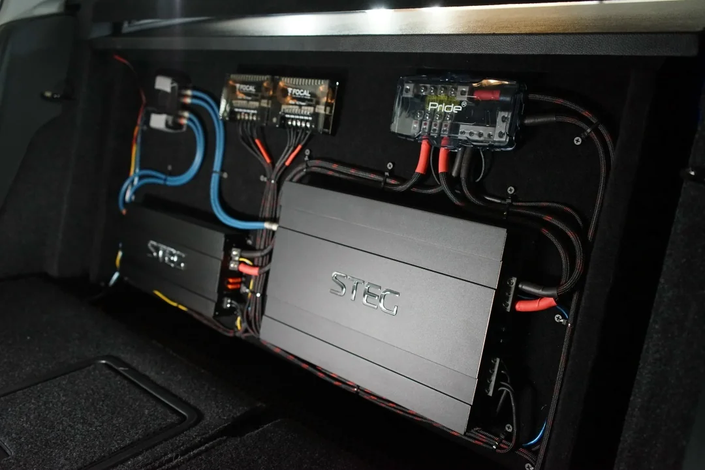
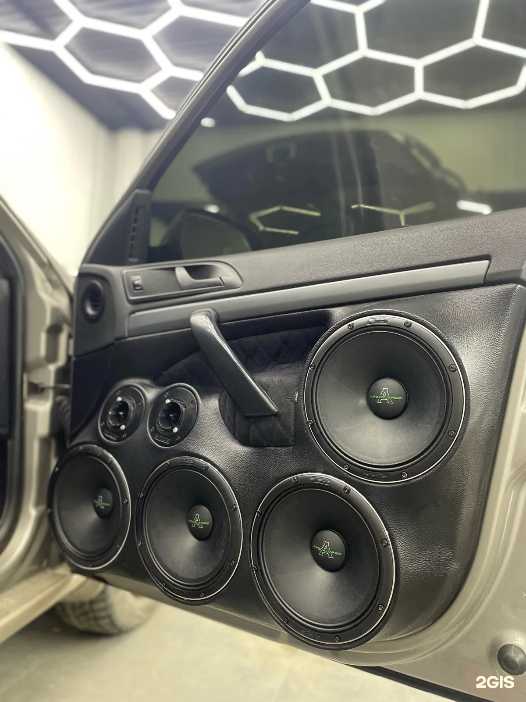
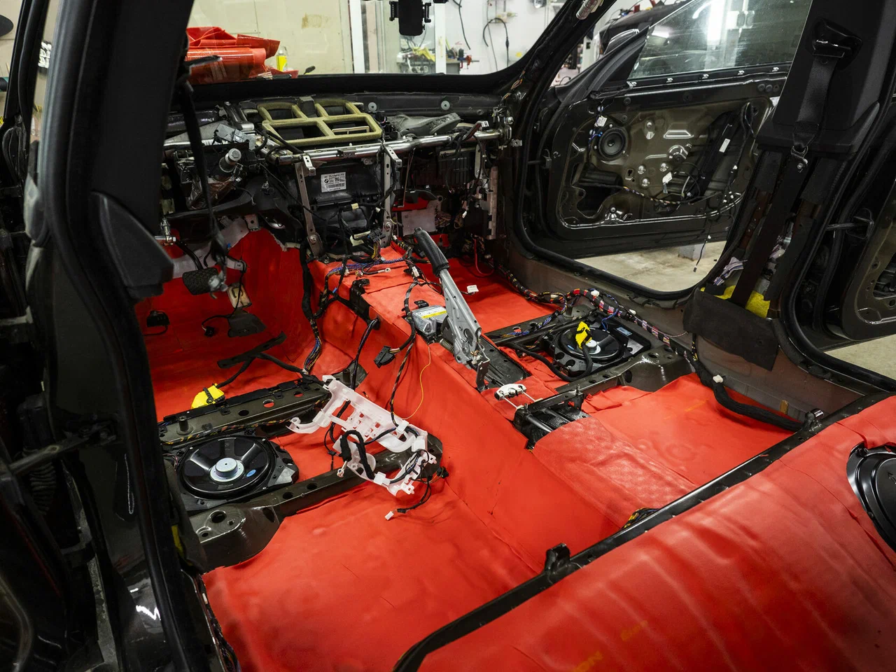
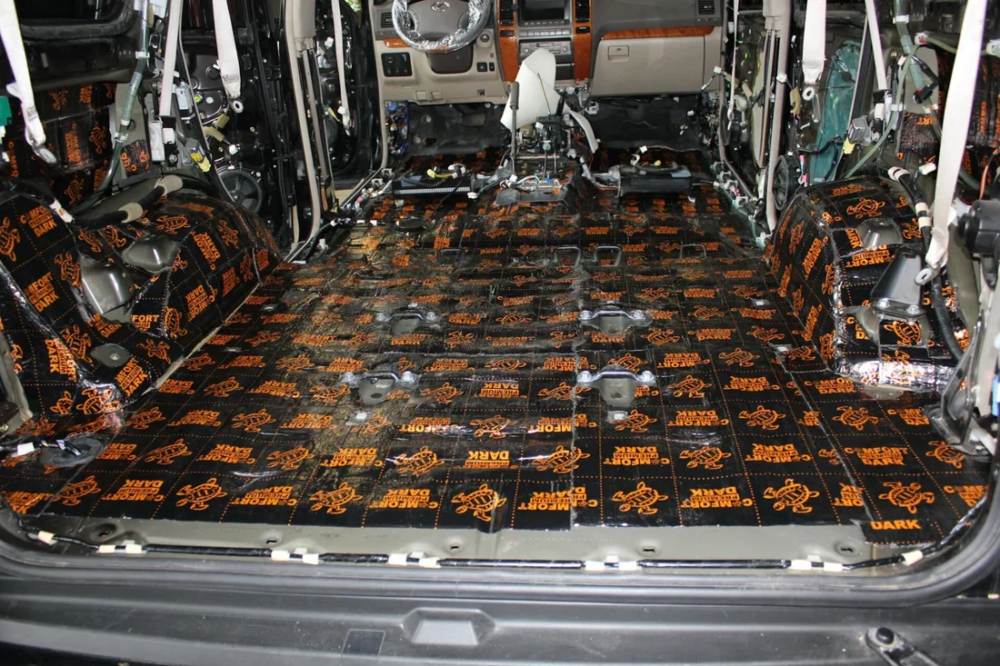
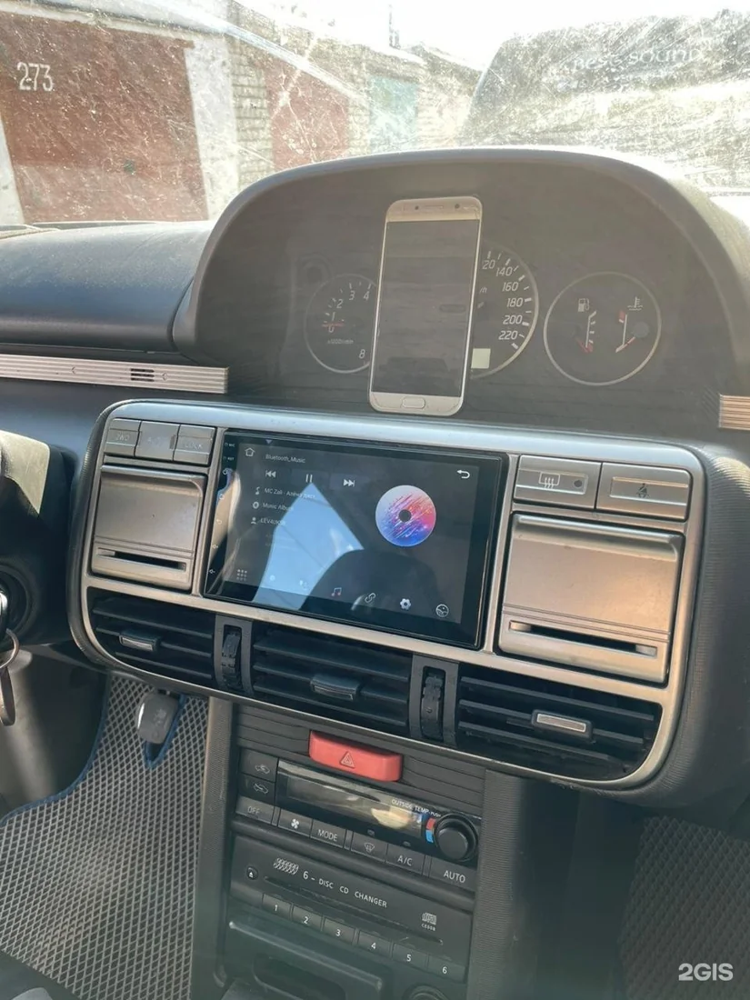
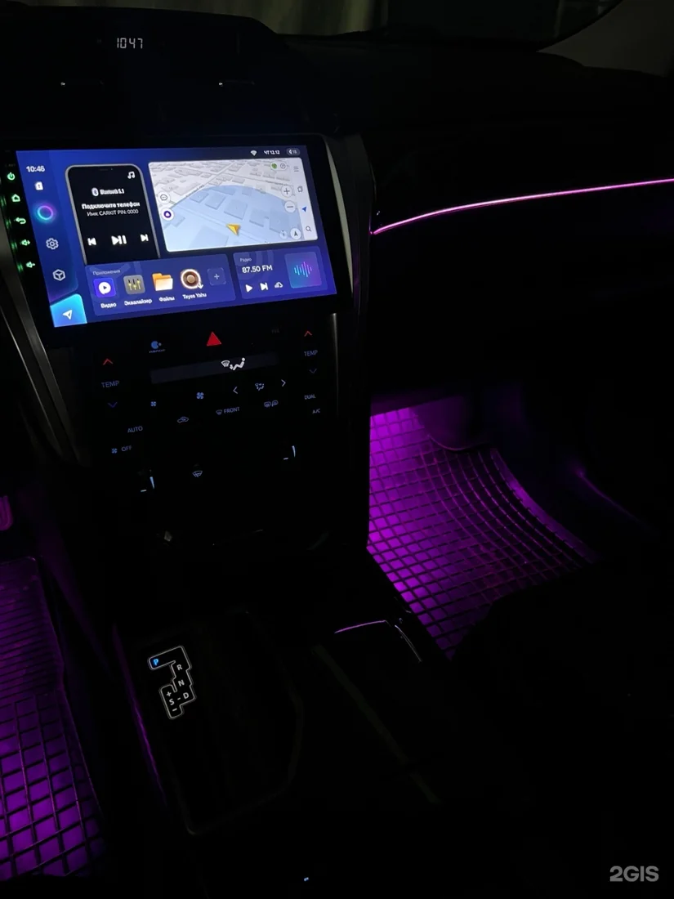
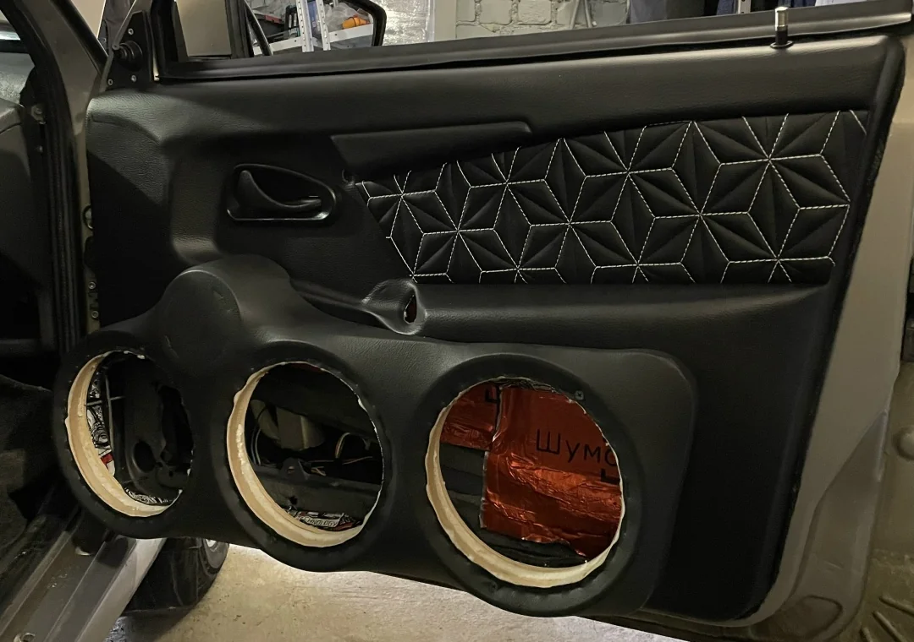
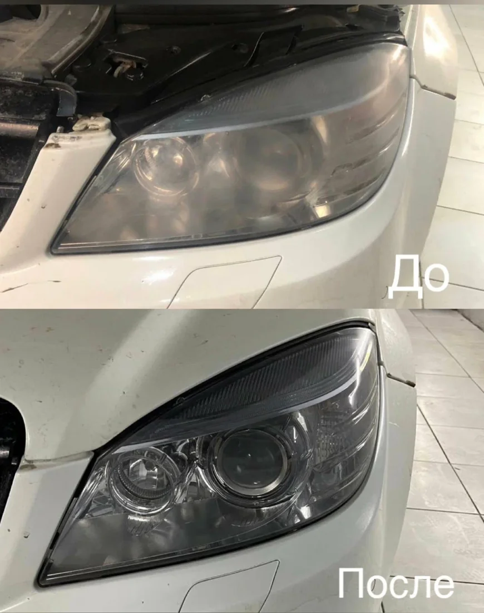

01Автозвук
Акустика, усилители, сабвуферы и настройка системы. От замены штатных динамиков до установки полного комплекта.

Автозвук и шумоизоляция в Воронеже. Устанавливаем и настраиваем аудиосистемы, дорабатываем салон и подключаем оборудование.

Знакомьтесь, Best Sound
Штатная акустика, шум в дороге, устаревшая магнитола — у каждого автомобиля своя задача. Помогаем выбрать нужные доработки и собираем решение под ваш запрос.
В студии занимаемся автозвуком, шумоизоляцией, мультимедиа, сигнализациями, подсветкой и дополнительным оборудованием.
Найти свою задачу01 / Услуги
Выберите направление.
Состав работ обсудим под конкретную машину.

01Акустика, усилители, сабвуферы и настройка системы. От замены штатных динамиков до установки полного комплекта.

02Двери, пол, багажник, крыша и арки. Отдельные зоны или комплексная обработка автомобиля.

03Магнитолы, камеры заднего вида, видеорегистраторы и дополнительное оборудование для удобства за рулём.

04Атмосферная подсветка торпедо, дверных карт, ручек и зоны ног. Состав комплекта обсуждаем для вашей модели.

05Изготовление подиумов и дверных карт под акустику. Варианты отделки — покраска или перетяжка.

06Полировка автомобиля, защитные покрытия, химчистка салона и оклейка защитной плёнкой.
Подход к работе
Звук, комфорт и удобство —
в одной студии.
Замена одного компонента или комплексный проект: начнём с того, что вы хотите изменить.
Установка акустики, прокладка проводки и настройка оборудования — части одного результата.
Для расчёта понадобятся модель автомобиля, выбранная услуга и информация об оборудовании.
Условия гарантии уточняются для конкретной услуги при согласовании проекта.
02 / Стоимость
Цены на работы из прайса студии. Итоговая стоимость зависит от автомобиля, оборудования и объёма доработок.
Рассчитать мой проектЦены носят информационный характер. Наличие материалов и актуальную стоимость уточняйте перед записью.
| Работа | Стоимость |
|---|---|
| Установка и замена магнитол | 2 000 ₽ |
| Замена штатной акустической системы | 1 500 ₽ |
| Полная установка аудиосистемы | от 12 000 ₽ |
| Настройка магнитолы, усилителя, процессора | от 1 000 ₽ |
| Протяжка силовой проводки | 1 500–2 000 ₽ |
| Дублирующая проводка от генератора | 2 000 ₽ |
| Установка камеры заднего вида | 2 000 ₽ |
| Установка видеорегистратора | 1 500 ₽ |
| Установка дополнительного оборудования | от 1 500 ₽ |
| Работа | Стоимость |
|---|---|
| Полная шумоизоляция автомобиля | от 45 000 ₽ |
| Шумоизоляция четырёх дверей | 20 000 ₽ |
| Шумоизоляция четырёх арок снаружи | 20 000 ₽ |
| Работа | Стоимость |
|---|---|
| Контурная подсветка | 20 000 ₽ |
| Изготовление подиумов | от 5 000 ₽ |
| Дверные карты с перетяжкой | от 20 000 ₽ |
| Дверные карты с покраской | 15 000–45 000 ₽ |
| Полировка автомобиля и нанесение покрытий | от 20 000 ₽ |
| Химчистка салона | от 10 000 ₽ |
| Оклейка автомобиля защитной плёнкой | от 5 000 ₽ |
03 / Выполненные проекты
Показаны все 8 работ
Замена штатного головного устройства
Установка процессорного усилителя Hellion и сабвуфера
Шумовиброизоляция пола
Установка атмосферной подсветки салона
Замена штатного головного устройства
Установка аудиосистемы
Шумовиброизоляция дверей
Подсветка дверных карт и ручек
Продолжение — во ВКонтактеБольше проектов, фотографий и подробностей о работе студии.
От идеи до установки
Назовите автомобиль и что хотите улучшить. Если оборудование уже выбрано, пришлите его модель.
Уточним состав доработок, стоимость и удобное время. Детали согласуем до начала работ.
Установим оборудование, проведём настройку и обсудим результат при выдаче автомобиля.
04 / Обратная связь
работа по замене магнитолы произведена за час. Быстро, качественно.
Парни молодцы. Профессионально и быстро установили магнитолу
сделали всё очень быстро, качественно, и аккуратно!
Сергей отличный мастер, установил мне на автомобиль камеру заднего вида
Отличная студия, не однократно обращаюсь к ребятам. Всегда все на высшем уровне!
Перед записью
Для конкретного автомобиля
ответим по телефону или в WhatsApp.
Пришлите марку, модель и год автомобиля, опишите задачу и укажите оборудование, если оно уже есть. По этим данным мастер сможет уточнить состав работ и стоимость.
В прайсе есть отдельные работы по замене магнитол и штатной акустики. Можно начать с нужного вам компонента; совместимость и подключение обсудим для вашей машины.
Доступны отдельные работы по дверям и наружным аркам, а также полная шумоизоляция. Выбор зависит от того, какой шум беспокоит и какой объём работ вы планируете.
Да, среди услуг — камеры заднего вида, видеорегистраторы, сигнализации, контурная подсветка и другое дополнительное оборудование. Нужный комплект уточните при обращении.
Студия указывает гарантию на выполненные работы. Её условия и сроки установки зависят от услуги: обсудите их с мастером при согласовании заказа.
Большинство кейсов публикуем в сообществе Best Sound во ВКонтакте. На сайте — подборка работ с фотографиями и описаниями.
05 / Ваша следующая поездка
Расскажите, чего не хватает: звука, тишины или удобства. Обсудим, что можно сделать.
+7 980 539-07-97